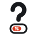
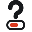

AInda dá? — símbolo aprovado
D-017 · 2026-10-26. Interrogação com barra de chance e % no preenchimento. A partir de 64 px usa-se a versão completa; abaixo disso, a reduzida, sem o %.
Versão completa
Versão reduzida (abaixo de 64 px) e favicon
Foto de perfil
papel


tinta

Assinatura provisória (tipografia ainda não decidida)
AInda dá?
AInda dá?